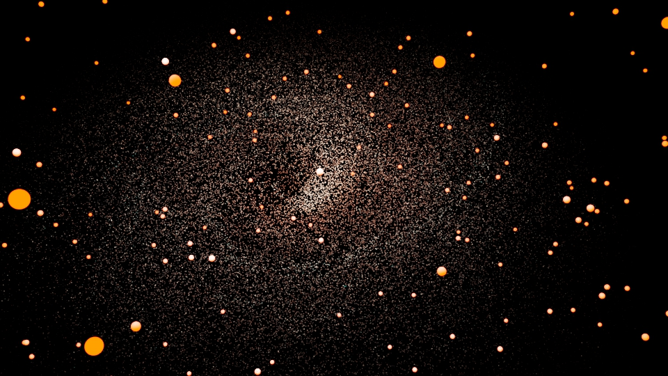

PORT
FOLIO
ANIMATION GÉNÉRATIVE

Créer une courte animation générative, alliant expérimentation et créativité.
[ Animation 3D ]
[ Individuel ]
[ Recherche d'inspiration, génération et montage ]
[ MAYA & DaVinci ]
OBJECTIF
Le projet avait pour objectif de créer une animation 3D à l’aide des systèmes d'animations génératifs de MAYA. Il était demandé d’avoir une approche autonome et expérimentale, combinant recherche de solutions techniques, créativité et flexibilité pour surmonter les défis d’animation.
PROCESSUS
Tout commence par l’idéation. Le choix s’est porté sur le système de nParticules de MAYA, car cette animation évoquait l’organisation du système solaire. Comme tous mes projets, je voulais procurer un sentiment immersif. Une première tentative a été réalisée qui représentait la Voie Lactée.
Insatisfaite du résultat initial et conformément à la consigne de ne pas s’éterniser sur le travail, j'ai recommencer mon projet dans une nouvelle approche, toujours en utilisant le système nParticules. Une fois l'animation complétée, j'ai rajouter de la texture et de la lumière pour renforcer la cohérence. Cette texture provient d'ailleurs de POLIIGON

Les images rendues ont ensuite été montées dans DaVinci, et le tout a été stylisé en intégrant un son, accentuant ainsi l’impact spectaculaire de l’animation malgré sa courte durée.
Sous la direction artistique et technique de Charlène
CONTACTS
Travaillons ensemble !
[Écrivez-moi un message]
© 2025 Jade Hébert. Tous droits réservés.
[ VERS LE HAUT ]